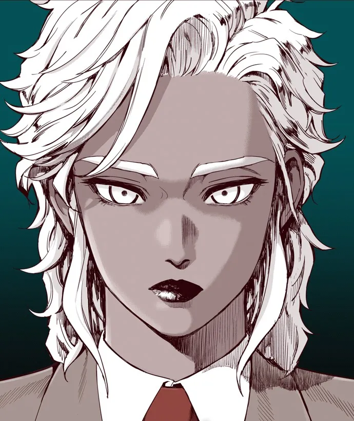

격기3반의 등장인물. 남일고등학교 격기반 2학년 주장이자 교내 최강자.
브라질 교포. 주대각에 의해 자신을 제외한 바르보자 가문 전체가 몰살당해 브라질에서 가족을 잃은 이후,
한국에 와서 복수를 하려다 실패했다고 묘사한다.
주대각을 잡을 수 있을 만한 실마리로 평범히 살고 있던 취업반의 주지태를 픽업한다.
주지태에게 주짓수를 가르쳐 격기반에 입단시키기 위해 사건까지 조작하면서 그를 격기반으로 끌어들인 인물.
그 이후로도 주지태에게 각종 기술 전수나 조언을 해준다.
그러나 주지태가 마리아를 어머니와 비슷한 존재로 여기며 따르는 것과는 달리,
철저하게 그를 비즈니스 파트너 그 이상으로 보지 않고 있으며 주지태의 빠른 성장을 위해 원치 않는 길거리 싸움을 강요하는 등 비정한 모습을 보이기도 한다.
'설중매화' 에피소드에서는 최영준과 스파링을 하다가 코뼈가 부러지고 전의를 상실한 주지태를 계속 싸우라고 살기등등하게 몰아붙이며
끝내 최영준에게 두들겨 맞고 쓰러질 때까지 내버려 둔다.
이로 인해 주지태는 큰 충격을 받고 약한 자신에 대한 원망, 원치 않게 폭력을 휘두르면서 생긴 자기혐오, 어머니처럼 따르던 마리아에 대한 배신감이 뒤섞여 성격이 크게 바뀌어 버리게 된다.